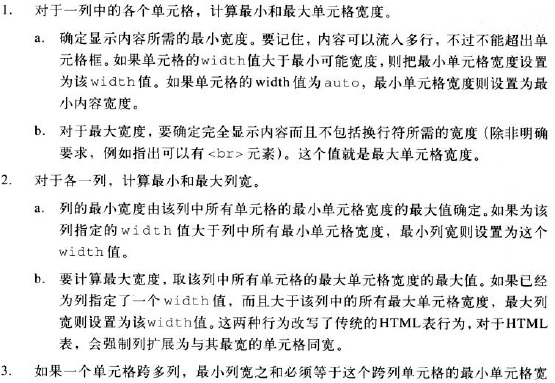
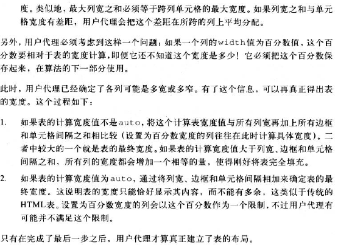

确定表的宽度有两种不同的方法：固定宽度布局和自动宽度布局。确定使用哪一种方式的关键字是table-layout
table-layout:fixed|auto;默认值是auto，应用于display值为table或inline-table的元素，有继承性
固定布局速度快，因为布局不依赖表单元格的内容，它的布局由该表及该表中列和单元格的width值决定的。
此时，表的宽度设置为表的width值或列的宽度之和（取其中较大者）。如果表宽度大于列宽之和，将二者之差除以列数，再 将得到的这个宽度增加到每一列上。
| Title | Title | Title |
| Content | Content | Content |
| Content | Content | Content |
值得注意的是，在大多数用户代理中，只要表的width为auto就会触发自动布局模型， 而不论table-layout的值是什么，不过这一点不能保证。
自动比较慢是因为在用户代理查看完表的所有内容之前无法确定表的布局。

表的高度计算在很大程度上留给用户代理决定。
水平对齐是最简单的，使用text-align属性即可；垂直对齐使用vertical-align属性。
注意当vertical-align值为sub、super、text-top和text-bottom应用到表单元格时，会被忽略。